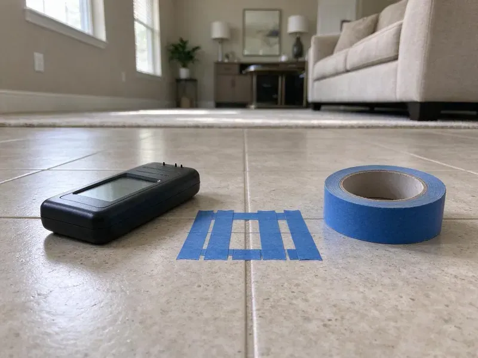

Hot Water Tank Maintenance in Portage, MI
Your water heater's relief valve has probably not been tested since install. Ours get tested by hand on every visit in Portage, MI.
- Anode Rods on Each Truck
- Licensed Michigan Plumbers
- Flat Pricing Before Work
- Serving All of Michigan

Book Annual Tank Maintenance in Portage, MI.
A yearly flush costs far less than a new tank and a wet floor.
Tank Flushing and Anode Checks in Portage, MI
CHV Plumbing keeps a maintenance log for every tank we touch in Portage, MI, with the install date off the data plate, the anode reading and the date of the last relief valve test. Records matter for warranty claims. They also tell you when to start budgeting for a new heater.
Work we handle every week:
- Expansion tank precharge check with a gauge
- Thermostat set to 120 degrees
- Drain pan and pan drain line inspection

Additional Plumbing Maintenance Services in Portage, MI
Our maintenance and specialty plumbing services in Portage, MI catch small problems before they become emergencies.


Customers
Why Choose CHV Plumbing for Hot Water Tank Maintenance in Portage, MI?
Licensed plumbers do this work, not a helper with a hose. Gas valves and venting need a trained eye. They check draft at the hood, the vent slope and the gas shutoff before relighting.
- Venting Checked, Gas units get a draft and vent connector check every visit.
- Relief Valve Tested, We lift the T&P lever and confirm it reseats without dripping.
- Lower Energy Bills, Without a sediment blanket on the bottom, the burner or elements heat water faster.
Citywide Coverage
Trucks are stocked before they leave the shop each morning. That keeps us from driving back for parts. Anywhere in our area, the tech shows up with anodes, drain valves, relief valves and a spare thermocouple on board.
Experienced Team
Training happens every year, covering code updates, new FVIR burner designs and manufacturer service bulletins. Codes change more often than people think. A plumber who learned on tanks from the 1990s needs to know how a sealed combustion chamber or an electronic gas valve behaves before opening one up.
Safety-First Approach
Plumbing codes in most areas ask for a drain pan where a leak would damage finished space, and some jurisdictions add strapping or a second support. We check what your tank has. We note missing items in plain terms.
Trusted Certified Portage Plumbing Services Professionals
At CHV Plumbing, we are proud to offer certified plumbing services throughout Portage, MI. Those papers on the wall mean something. Our plumbers hold recognized industry credentials, and they follow strict safety and quality rules on every repair, installation and maintenance call we run.
Call Us Now PHCC Plumbing Contractor Recognition
PHCC Plumbing Contractor Recognition Better Business Bureau (BBB) Accreditation
Better Business Bureau (BBB) Accreditation Angi Certified Pro
Angi Certified Pro ISO 9001 Quality Management Certification
ISO 9001 Quality Management CertificationWater Heater Tank Maintenance in Portage, MI
Rheem and Bradford White Tank Service in Portage
Rheem, Bradford White, AO Smith and State make most of the tanks in local garages, and each has quirks a tech should know before opening a drain valve. On some models the anode sits under a plastic top cap. Bradford White often uses a combo anode in the hot outlet nipple. We carry the right sockets for each brand.

Sediment Flush and Descaling in Portage
Calcium carbonate drops out of hard water every time the tank heats, and over a year it can harden into chunks the size of a thumbnail. Those chunks cause the popping. When a plain flush will not move them, we use a descaling solution rated for potable systems, let it sit and then flush it all out. A clean bottom puts less heat stress on the seam.
Commercial Tank Maintenance in Portage, MI
Restaurants, salons, laundromats and small offices run tanks much harder than a household does, often 75 to 100 gallons cycling all day. Sediment builds up two or three times faster. Most commercial tanks go on a quarterly or twice-yearly schedule with a dated log on the jacket. Downtime gets scheduled outside business hours.
Emergency Tank Inspections in Portage
Sudden changes call for a look the same day: a tank that suddenly rumbles, hot water that turns brown, a puddle forming under the pan, or a relief valve that will not stop dripping. We diagnose first. Sometimes the fix is a flush and a new drain valve, and sometimes the tank is leaking from the liner and nothing will save it.
Yearly Maintenance Plans in Portage, MI
A maintenance plan puts your tank on the calendar so nobody has to remember. We call you when it is due. Each plan is a fixed yearly rate for one or two visits, priority booking and a parts discount. Homes on well water or very hard water usually do better with the twice-a-year option.
Emergency Tank Troubleshooting in Portage
No hot water at all is usually a pilot, a gas valve, a tripped high-limit or a dead element. Most of those are quick fixes. With a leak, we first check whether water comes from a top fitting or from under the jacket. Leaks from under the jacket mean the tank itself has failed.
Electric Element Check in Portage
Electric tanks have two elements, usually 4,500 watts at 240 volts, and the lower one does most of the work and takes most of the scale. Each element gets an ohm reading. If the hot water quits halfway through a shower, the lower element is the first suspect. We replace it with the matching wattage and voltage.

Anode Rod Replacement in Portage, MI
Water chemistry changes from one street to the next, and so does anode life. Three to five years is typical. A softened water supply can chew through a magnesium rod in two. A new rod costs a fraction of a tank and often adds years.
Hot Water Tank Maintenance Near Me in Portage, MI
Searching hot water tank maintenance near me in Portage, MI turns up a lot of names, and the real question is who can show up this week with the parts on the truck. Most weeks, we can. Most days we have a plumber working nearby.
A plumber who works near Portage every week knows which subdivisions put tanks in attics and which older streets still have them in a basement corner. That saves time on the first visit. We bring the ladder, the pan and the right hose length for your setup.
CHV Plumbing at a Glance
- Licensed and insured plumbers serving Portage, MI
- 24/7 emergency service with same-day scheduling
- Upfront, flat-rate pricing before work begins
- 4.9-star rated by 670+ Michigan customers
Portage Map
Portage Information
- Population
- 49,302
- Area codes
- 269/616/248
- Service area
- Portage and towns within a 40 mile drive
- Nearby
- Kalamazoo, Battle Creek, Holland, Kentwood
Every heating cycle drops a little calcium and silt on the tank floor in Portage, MI, and a yearly flush keeps that layer from cooking into hard scale.
Expert Services
Call CHV Plumbing for reliable plumbing work done by licensed pros in Portage, MI.
Our Specialized Plumbing Services in Portage, MI
At CHV Plumbing, you get every kind of plumbing service from one company across Portage, MI. From leak detection to full system installs, our team works fast and charges fair prices on homes and commercial properties alike. Take a look at our core services below:


Our Tank Maintenance Process in Portage, MI
A tank visit usually runs about an hour, and you can watch any part of it.
Call or Book Online
Call (810) 380-5918 or use the online form, and tell us the tank size and fuel type. You get a flat price before we schedule.
Arrival and Look-Over
Your CHV Plumbing plumber reads the data plate, checks for leaks and explains what the visit covers.
Flush and Inspect
We drain and flush the tank, pull the anode and lift the T&P lever while it is empty.
Frequently Asked Questions About Hot Water Tank Maintenance in Portage
Most flush and inspection visits in Portage land between $100 and $250, depending on tank size and how hard it is to reach. An anode swap is extra. You hear the flat price before we schedule.
Plan on 45 to 90 minutes. Heavily scaled tanks run longer. A tank in a tight closet or an attic, where the hose has to run a long way to a drain, adds a bit more, and so does an anode that has fused to the tank threads.
Yes, a basic drain with a garden hose is something most homeowners can do. Watch out for the drain valve. Plastic valves on older tanks often break or refuse to reseal after being opened for the first time in years, and a DIY flush does not include an anode check or relief valve test.
No permit is needed for flushing, anode replacement or a thermostat adjustment in most places. Replacing the whole tank is different. Local rules vary on valve swaps, and we check before quoting.
Yes. Sediment builds whether you hear it or not. Popping means the scale is already thick and partly hardened.
Many manufacturers write regular maintenance into the warranty terms and can deny a claim for sediment damage. Read the fine print on yours. A dated invoice that shows a flush and anode check each year is the simplest proof, and we leave one after every visit.
Popping or rumbling, hot water that runs out sooner than it used to, rusty or cloudy water from the hot side, a sulfur smell, or moisture around the base. One of those is enough. A dripping relief valve pipe counts too.
Lake-sourced municipal water in Michigan is moderately hard, so scale gradually builds up in water heaters and fixtures. Dissolved calcium and magnesium drop out as scale every time the water heats, and that scale settles on the tank floor or crusts onto electric elements. Every layer costs you energy. Homes on harder water do better with a flush every six months.
What People Are Saying About Our Plumbing Experts?

Sofia M.
Two new toilets went in during one visit. The tech set them on new wax rings and swapped the old supply lines. He also noticed our bathroom faucet dripping and replaced the cartridge while he was there. No mess left behind.
Toilet Installation · Wyoming, MI
Mark T.
The floor drain in our office break room backed up every few weeks. The plumber ran a cable, then put a camera down and found roots at a joint about thirty feet out. Seeing it on the screen made the decision easy.
Drain Cleaning · Holland, MI
Patricia H.
We had a slab leak that two other companies could not find. CHV Plumbing located it in under an hour with a listening device. They rerouted the line through the attic instead of breaking up the floor, so we kept our kitchen tile.
Slab Leak Repair · Kentwood, MI
Tyler J.
We bought a taller comfort height toilet for my dad, who just had knee surgery. The plumber pulled the old one, found the flange was cracked, and replaced it before setting the new bowl. Took about two hours.
Toilet Installation · Kalamazoo, MIAngela D.
Our sump pump quit during a storm and the water was an inch from the basement carpet. CHV Plumbing put in a new pump with a battery backup that same evening. We have had two heavy rains since. It kicked on both times.
Sump Pump · Grand Rapids, MI
Kevin O.
Before buying our house I paid for a sewer camera inspection. CHV Plumbing found a belly in the line that held standing water about forty feet from the cleanout. We used the video to get the sellers to fix it before closing.
Sewer Camera Inspection · Wyoming, MI